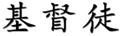

Many explanations for the discrepancy have been suggested. One author, for example, suggested
that kempo referred to the animal nature in man, and kenpo referred to that same kempo (animal) nature,
later disciplined and controlled.1 That
explanation may or may not be valid, but the writer offers little evidence to substantiate it.
Unfortunately, this is often the case.
Further, although many of the art's practitioners call it Chinese kenpo (or kempo), the word, as
pronounced, is not Chinese. It is, to be precise, the Japanese pronunciation of the Chinese word
ch'uan fa. Ch'uan fa has been translated variously as "fist law,"
"fist way," "way of the fist," "boxing principles," or just plain "boxing." These meanings
correspond to those Japanese-speaking authors offer for kempo.
In numerous publications, Japanese-speaking authors consistently Romanize the word as kempo (with an
m). For example, in his book This is Karate, Mas Oyama refers to this art as
Chinese kempo and says it means '"fist fighting" or "boxing."2
Another author, Okinawan Master Ryusho Sakagami, makes a similar reference to Chinese
kempo.3 These are just two examples of the many
Japanese-speaking authors and martial artists who use the same term for this art — and their
definitions provide the first key to determining the correct pronunciation of the word kempo.
The written language of the Japanese consists of Chinese characters (adopted
by the Japanese centuries ago), and several good linguistic sources are available for those interested
in its study. James Curtis Hepburn's Japanese and English Dictionary, a long-standing authority
on the Japanese language, lists seven Romanized words pronounced ken.4
(Remember, ken is the romanized pronunciation; not the actual spelling.)
Multiple words having the same pronunciation but differing in both spelling and meaning are not at
all unusual. They exist in all languages, and only the spelling or context indicates the intended
meaning. In English, for example, the words there, their, and they're have
different spellings and meanings, but their pronunciation is the same.
The seventh ken in Hepburn's dictionary is the kanji (character or pictogram) we seek
and its definition is, "a game played with the hands". That having been located, the search shifts
to the second part of the word kenpo: po. That one, however, proved a bit more difficult.
In Hepburn's dictionary, po is not listed at all. It turns out that the kanji for
po is actually a simple word (that is, not part of another word, but one that can stand by
itself). As a simple word it is correctly pronounced ho. Hepburn lists six words
Romanized to ho. The fourth one is our kanji character, and its meaning is "rule" or
"law." The literal translation of these two simple words, then, is "a game played with the
hands," plus "rule" or "law." Shifting gears from a literal (rearranged) translation of
"the rules of a game played with hands" to a sense-for-sense translation results in "boxing rules" or
"boxing principles" (also commonly known as "fist way," "way of the fist," etc.). However,
it is not pronounced kenho; there are other linguistic rules that must still be applied.
Remember, the po is pronounced ho when it stands alone (as a simple word).
However, making a compound word with ho as the second syllable changes the pronounciation:
ho becomes po. If the search were to stop here, the result would be kenpo;
however, according to some sources yet another linguistic rule remains to be applied. The other
rule that comes into play when making a compound word from these two simple words is as follows:
final n (), when at the end of
a word has always the sound of ng; as mon == mong, san == sang,
shin == shing; but in the body of a word, when followed by a syllable
beginning with b, m, or p, it is pronounced like m.
... Before the other consonants it has the sound of n.5
A similar linguistic parallel is found in English. The letter "p", for example, is always
pronounced as "p" (as in the words grape, grapple, etc.), except when it is followed by the letter
"h". In the word graph, for example, the "p" is pronounced "f". According to some, then,
correct Japanese grammar dictates, then, that the word is kempo (with an "m").
Do these linguistic rules make kempo the right name and kenpo wrong? No.
It may be, quite simply, an uncorrected mistake. The name of our school, Je du-too
(  )
is such a Romanization mistake. At the time when we chose that name we simply did not know
how to Romanize the Chinese word we sought. It, therefore, might also be that some consciously
decided to spell their art kenpo, feeling that it had sufficiently changed or evolved to the point
that it was no longer the kempo of old. (Perhaps this is why kenpo from Hawaii is spelled with
an "n".) Such an act is both honest and honorable. Honest because it says that any
mistakes we may or may not make in our art are not to be laid at the feet of our teachers or
predecessors. It is also honorable because it acknowledges the contributions of all who came
before us.
References
-
James Y. Lee, Modern Karate and Kung fu, 1963, p.3.
[Return to reference point]
-
Mas Oyama, This is Karate, 1978, p.309
[Return to reference point]
-
Ryusho Sakagami, Nunchaku and Sai, 1975, p.10
[Return to reference point]
-
James Curtis Hepburn, A Japanese and English Dictionary with an
English and Japanese Index, First Tuttle edition. Rutland, Vermont, and Tokyo:
Charles E. Tuttle Co., 1983 (197).[Return to reference point]
-
ibid., Introduction, xi.
[Return to reference point]
|